Introduction
On the introduction page a database was a table — fields, records, one neat grid. Design is the stage where we decide what those tables should actually be before anyone types in a single record, and it turns out that one table is almost never the right answer.
Get the design right and the database is quick to search, impossible to fill with contradictory rubbish, and easy to add to. Get it wrong and you are stuck with it — which is why the exam spends so much time here. Design is examined through four things: splitting data across linked tables, keys, data dictionaries and entity-relationship diagrams.
Key Terms
From One Table to Two
Our school wants to record every pupil, and which lunchtime or after-school club each pupil attends. The obvious first attempt is to shove the lot into a single table — a flat file database:
| pupilID | pupilName | house | clubName | meetingDay | staffLead |
|---|---|---|---|---|---|
| P101 | Archie | Churchill | Chess Club | Monday | Mr Anderson |
| P103 | Mason | Montgomerie | Chess Club | Monday | Mr Anderson |
| P108 | Louie | Nightingale | Chess Club | Monday | Mr Anderson |
| P104 | Christian | Nightingale | Debating | Tuesday | Ms Hendry |
| P109 | Matthew | Curie | Debating | Tuesday | Ms Hendry |
Look at the last three columns. "Chess Club — Monday — Mr Anderson" has been typed out three times, and we have only listed five pupils. With thirty members it would be there thirty times.
Why that is a problem
Repeating the same information is not just untidy — it causes three specific faults, and the exam expects you to be able to describe them:
- Update anomaly — Chess Club moves from Monday to Thursday. Every single Chess Club pupil's record has to be edited. Miss one and the database now says two different things at once.
- Insert anomaly — the school starts a Robotics Club, but nobody has joined yet. There is nowhere to put it, because a club can only exist attached to a pupil.
- Delete anomaly — Christian and Matthew both leave. Delete their records and Debating Club vanishes from the school entirely, along with Ms Hendry.
The fix — split it into two tables
The information about pupils and the information about clubs are two different things, so they belong in two different tables. Each club is stored once, and each pupil simply records which club they attend by storing its ID. This is a relational database.
Club — every club appears exactly once:
| clubID | clubName | meetingDay | meetingTime | staffLead | equipmentProvided |
|---|---|---|---|---|---|
| C01 | Chess Club | Monday | 15:30 | Mr Anderson | TRUE |
| C02 | Debating | Tuesday | 13:05 | Ms Hendry | FALSE |
| C03 | Film Making | Thursday | 15:30 | Mrs Kaur | TRUE |
| C04 | Athletics | Wednesday | 16:00 | Miss Lawson | FALSE |
Pupil — each pupil stores only the club's ID:
| pupilID | pupilName | dateOfBirth | yearGroup | house | meritPoints | clubID |
|---|---|---|---|---|---|---|
| P101 | Archie | 14/03/2010 | 4 | Churchill | 42 | C01 |
| P102 | Noah | 02/11/2009 | 5 | Curie | 18 | C03 |
| P103 | Mason | 27/06/2010 | 4 | Montgomerie | 55 | C01 |
| P104 | Christian | 09/01/2008 | 6 | Nightingale | 31 | C02 |
| P105 | Leoni | 18/09/2010 | 4 | Curie | 67 | C04 |
| P106 | Lucienne | 30/04/2009 | 5 | Churchill | 24 | C03 |
| P107 | Erika | 12/12/2011 | 3 | Montgomerie | 49 | C04 |
| P108 | Louie | 05/07/2009 | 5 | Nightingale | 12 | C01 |
| P109 | Matthew | 21/02/2011 | 3 | Curie | 38 | C02 |
| P110 | Riley | 08/05/2010 | 4 | Churchill | 71 | C04 |
| P111 | Harveer | 16/10/2008 | 6 | Nightingale | 26 | C03 |
All three anomalies are gone. Chess Club changes day? Edit one record. Robotics Club has no members yet? Add it to Club and leave it there. Everyone leaves Debating? The club is still on the books.
house still just a field? Because the only thing we store about a house is its name. There is no repeated extra information to pull out — moving it to its own table would gain us nothing. If the school also wanted to record each house's head of house, colour and points total, then house would deserve its own table. Split out a table when there is other data that keeps repeating alongside it, not just because a value appears more than once.At National 5 you work with databases of two linked tables, and always with a one-to-many relationship: one club has many pupils, one owner has many pets, one team has many players.
Primary & Foreign Keys
Splitting the data into two tables only works if the computer can tell records apart, and can find its way from one table to the other. That is what the two keys are for.
Unique identification and the primary key
Every entity must have a primary key: an attribute used to uniquely identify each record. The value in the primary key is never repeated in another record, and it is never left empty.
Why not just use pupilName? Because names are not unique. Our eleven pupils happen to have eleven different names, but a school of a thousand will have several called Matthew — and the moment a second one enrols, searching for "Matthew" returns two records and the database can no longer tell them apart. Which one gets the merit point? A primary key has to stay unique forever, not just today, so anything a second pupil could plausibly share is unusable.
That is why IDs, numbers, codes and registrations make natural primary keys — they are invented to be unique: pupilID, clubID, an ISBN for a book, a registration number for a car.
Linking the tables with a foreign key
A foreign key is an attribute in one entity that is the primary key of another entity. In our database, clubID is the primary key of Club — and it appears again in Pupil, where it is the foreign key. That single shared attribute is the entire link between the two tables.
The two gold columns hold the same kind of value, but they behave completely differently — and that difference is the whole idea:
| Primary key — Club.clubID | Foreign key — Pupil.clubID | |
|---|---|---|
| Repeats? | Never. Every value is different. | Freely. Archie and Louie are both C01. |
| Its job | Uniquely identify one club. | Link each pupil to their club. |
| Rule | Must be unique and must be filled in. | Must match a value that already exists in Club. |
Worked examples
Look back at the Pupil and Club tables above. Identify the primary key of each table, and identify the foreign key.
How to tackle it: we work through it in a fixed order, and the same order works every time.
Step 1 — find each primary key. We take one table at a time and ask: which single attribute never repeats? In Club, clubID runs C01, C02, C03, C04 — all different. Nothing else qualifies; two clubs could easily meet on a Monday. In Pupil, pupilID runs P101 to P111 — all different. Watch pupilName: it happens to be unique across our eleven pupils, but a primary key has to be unique forever, not just today. One more Archie and it breaks.
Step 2 — find the attribute that appears in both tables. Scan the two lists of attributes side by side. Only one name shows up twice: clubID.
Step 3 — decide which copy is the foreign key. The one that repeats is the foreign key. In Club, clubID is unique — that is the primary key, its home table. In Pupil, C01 appears three times — so that copy is the foreign key.
Watch the trap: "clubID is the foreign key" on its own is not a full answer, because clubID is in both tables. Always say which table the foreign key is in — the mark is for clubID in the Pupil table.
So the answer is:
Primary keys: pupilID in the Pupil table and clubID in the Club table (1 mark). Foreign key: clubID in the Pupil table, which is the primary key of Club (1 mark).
This question uses a netball league database. The Club table stores the clubs; the Player table stores the players:
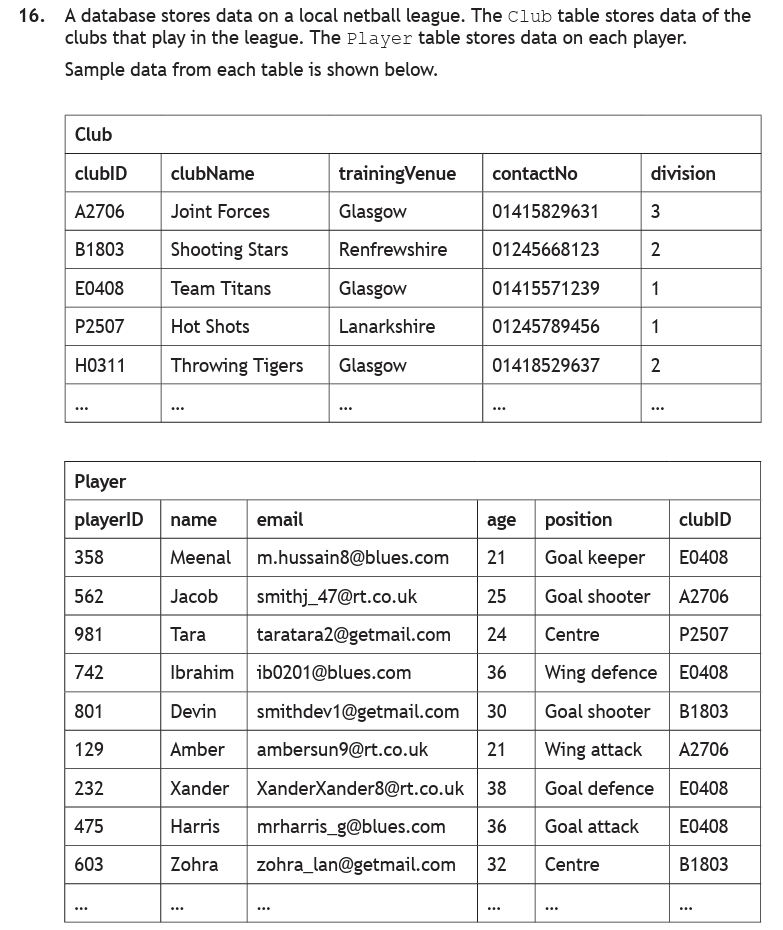
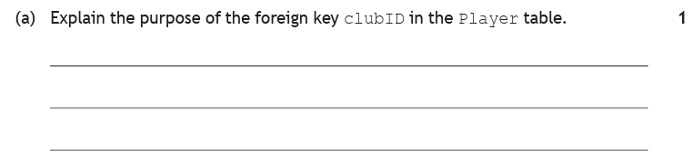
How to tackle it: the question has already told us clubID is a foreign key, so no marks are going for spotting that. It asks for the purpose — what the attribute is for.
We check what it does in the data. Every player record carries a clubID, and that value also appears in the Club table as its primary key. So a player's clubID is what points them at their club. Without it, the two tables would sit there as two unrelated lists.
Watch the trap: it is tempting to write "it identifies the club" — but that is the job of the primary key over in Club. A foreign key's job is to create the relationship. One word does the heavy lifting here: links.
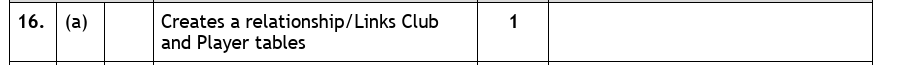
Notice how short the marking instruction is. For 1 mark, name the two tables and say they are linked — no more is needed.
So the answer is:
It creates a relationship between the Club and Player tables — each player's clubID matches the primary key of a club, linking that player to their club.
Referential Integrity
Linking two tables with a primary and foreign key raises an obvious question: what stops somebody typing in a club that does not exist?
Referential integrity is the rule that says every foreign key value must match an existing primary key value in the linked table. When it is switched on, the database itself refuses to let you break the link — you do not have to remember, and neither does anyone else using it.
A new pupil, Blair, has joined the school in S4 and needs a record. Here is the complete set of data the office types in — one value for every attribute in the Pupil table:
| pupilID | pupilName | dateOfBirth | yearGroup | house | meritPoints | clubID |
|---|---|---|---|---|---|---|
| P112 | Blair | 11/01/2010 | 4 | Curie | 0 | C07 |
Read across it and every value looks perfectly reasonable. P112 is a fresh ID that nobody else has. The name is filled in. The date of birth fits an S4 pupil. Curie is a real house. Zero merit points is fine for someone who has just arrived. Six of the seven values would sail through every validation check on the page.
The seventh is the problem. The Club table holds C01, C02, C03 and C04 — and nothing else. There is no C07.
What the database does with it. Before storing anything, it takes the foreign key value and goes looking for it in the linked table:
- Take the value entered in the foreign key:
clubID = C07. - Search the primary key of the Club table for C07.
- C01? No. C02? No. C03? No. C04? No. No match.
- Reject the whole record. ❌
Blair's record is not saved at all — not even the six good values. The insert fails as a single unit, because a half-stored pupil would be worse than no pupil.
Why refusing is the helpful thing to do. Suppose it had been allowed. Blair would sit in the database attached to a club that does not exist. Print the Chess Club register and Blair is missing. Ask the database which club Blair attends and it answers "C07", which means nothing to anybody. The error would not show up until months later, and by then nobody would remember what C07 was meant to be. Referential integrity turns a silent, permanent fault into an obvious one, at the only moment it can still be fixed easily.
The fix. Someone checks with Blair, who says Debating. C07 is corrected to C02, and the same check now runs differently — C02 is in the Club table, so the record is accepted ✅ and stored:
| pupilID | pupilName | dateOfBirth | yearGroup | house | meritPoints | clubID |
|---|---|---|---|---|---|---|
| P112 | Blair | 11/01/2010 | 4 | Curie | 0 | C02 |
The rule works in the other direction too. Deleting Chess Club while Archie, Mason and Louie are still in it is also rejected — three pupil records would be left pointing at a club that no longer exists.
Put plainly, without any of the vocabulary: you cannot join a club that does not exist, and you cannot delete a club that still has members. The same sentence works for any database — a player cannot play for a club that is not in the league, a pet cannot belong to an owner who was never registered, a booking cannot be for a flight that does not run.
This is a later part of the netball league question. The Club and Player tables are linked by clubID.
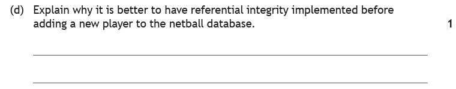
How to tackle it: the question says "before adding a new player", which tells us exactly which moment to think about — someone is typing a clubID into a brand new player record.
So we ask what could go wrong at that moment. They could mistype the ID, or enter a club that has never existed. With referential integrity switched on, the database checks that clubID against the Club table and refuses anything that does not match. The new player is therefore guaranteed to be attached to a club that is really there.
Watch the trap: this is not a validation question. Presence checks and length checks look at the value on its own; referential integrity checks it against another table. Answering "it stops invalid data being entered" is too vague to get the mark — say what it is being checked against.
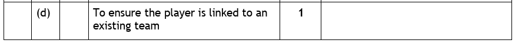
Once again the marking instruction is a single line — and the word that earns it is existing.
So the answer is:
It ensures the new player is linked to a club that already exists — the clubID entered must match a clubID in the Club table, so a player cannot be added to a club that is not in the database.
Referential Integrity Tester
The Club and Pupil tables, live. Try to add a pupil to a club that does not exist and watch the database refuse the whole record — then switch to Delete a club and try to remove one that still has members. Reading that referential integrity would stop you is one thing; being stopped is another.
Data Dictionaries
A data dictionary is the plan for the tables — it records, for every attribute, exactly what the database is allowed to store. In the exam you are far more likely to complete a partly-filled dictionary from a description of what the customer needs than to write one from scratch. It records six things:
- Attribute name — e.g.
meetingTime - Key — primary key (PK) or foreign key (FK); at N5 one PK per table, and blank for everything else
- Type — text, number, date, time or Boolean
- Size — for text only, the number of characters needed
- Required — must this field be filled in? (a primary key is always required)
- Validation — any checks applied to the data entered
Attribute types
Each attribute is given a type, which decides what sort of data it can hold. The five National 5 types are covered on the introduction page; here is the short version, with an example from our database:
| Type | Stores | In our database |
|---|---|---|
| Text | Letters, numbers and symbols | pupilName = "Lucienne", pupilID = "P101" |
| Number | Numeric values you might calculate with | meritPoints = 42 |
| Date | A calendar date | dateOfBirth = 14/03/2010 |
| Time | A time of day | meetingTime = 15:30 |
| Boolean | Only TRUE or FALSE | equipmentProvided = TRUE |
| In SDD, you would write… | In a database, write… |
|---|---|
| String | Text |
| Integer | Number |
| Real | Number |
| Boolean | Boolean — the one that is the same |
| (no equivalent) | Date, Time |
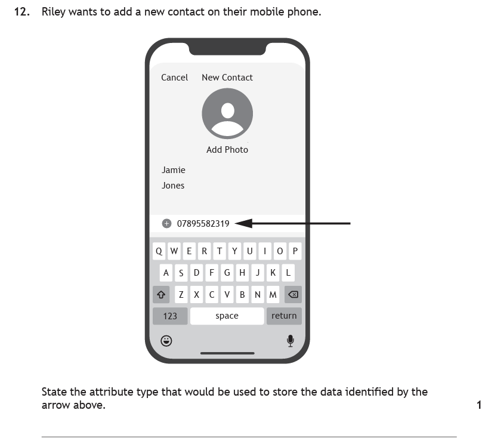
How to tackle it: the arrow points at 07895582319 — a mobile number. It is made of digits, so the instinct is to answer "number", and that instinct is wrong.
We apply the test that settles every one of these: would you ever do arithmetic with it? Nobody adds two phone numbers together or works out the average. It is a label made of digits, not a quantity.
There is a second, more concrete reason. A phone number starts with a 0. Store 07895582319 as a number and the computer drops the leading zero, leaving 7895582319 — the number is now wrong and undiallable. Text keeps every character exactly as typed.
Watch the trap: phone numbers, postcodes, bank sort codes, product codes and our own pupilID are all stored as Text, however numeric they look. And this is a database question, so the answer is "Text" — never "String".
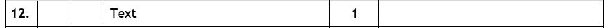
So the answer is:
Text
Validation
Validation checks that data entered is sensible before it is stored. There are exactly four types at National 5 — if a question asks which validation applies, the answer is one of these four:
yearGroup must be from 1 to 6, meritPoints from 0 to 100.pupilID must be exactly 4 characters.house must be Churchill, Curie, Montgomerie or Nightingale.Spotting which one a question wants is mostly about the wording used in the description:
| The requirement says… | Validation |
|---|---|
| "must be entered", "cannot be blank", "compulsory" | Presence check |
| "between 0 and 100", "no more than 5", "at least 12" | Range check |
| "exactly 4 characters", "8 digits long" | Length check |
| a fixed list of options, a drop-down menu, a set of radio buttons | Restricted choice |
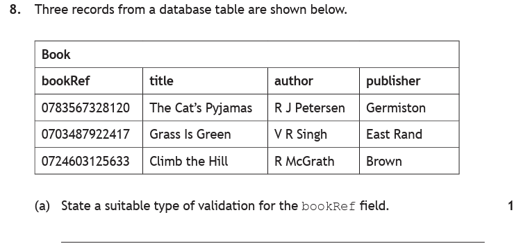
How to tackle it: the question gives us no description of the customer's needs — just three records. So the evidence has to come from the data itself, and that means looking down the column rather than reading across.
The three bookRef values are 0783567328120, 0703487922417 and 0724603125633. Count them: every one is 13 characters. That consistency is the clue the question is built on, and it points straight at a length check.
A presence check also earns the mark here, and it is easy to justify: bookRef is clearly the primary key of the Book table, and a primary key can never be left empty.
Watch the trap: a range check is wrong. These look like numbers but they are book references — they start with 0, and no one is going to calculate with them, so they are stored as Text. Ranges are for numbers you measure or count.
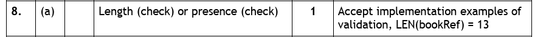
Note what the marking instructions accept at the end: writing it the way you would implement it, LEN(bookRef) = 13, is fine too.
So the answer is:
Length check — every bookRef is 13 characters long. (A presence check is equally acceptable.)
A completed data dictionary
Putting all of it together, here is the full data dictionary for our two tables. This is the finished article — in the exam, some of these cells would be blank for you to fill in.
| Attribute name | Key | Type | Size | Required | Validation |
|---|---|---|---|---|---|
| pupilID | PK | Text | 4 | Yes | Length check — exactly 4 characters |
| pupilName | Text | 15 | Yes | Presence check | |
| dateOfBirth | Date | Yes | Presence check | ||
| yearGroup | Number | Yes | Range check — 1 to 6 | ||
| house | Text | 12 | Yes | Restricted choice — Churchill, Curie, Montgomerie, Nightingale | |
| meritPoints | Number | Yes | Range check — 0 to 100 | ||
| clubID | FK | Text | 3 | Yes | Presence check |
| Attribute name | Key | Type | Size | Required | Validation |
|---|---|---|---|---|---|
| clubID | PK | Text | 3 | Yes | Length check — exactly 3 characters |
| clubName | Text | 20 | Yes | Presence check | |
| meetingDay | Text | 9 | Yes | Restricted choice — Monday to Friday | |
| meetingTime | Time | Yes | Presence check | ||
| staffLead | Text | 20 | Yes | Presence check | |
| equipmentProvided | Boolean | Yes | Presence check |
Data Dictionary Filler
Completing a part-finished data dictionary from a customer's description is the most common exam task on this page. Four sets to work through: the school clubs table you have just read, then a leisure centre, a driving school and a cinema. Every cell explains itself when you check it — including the ones you got right.
Entity-Relationship Diagrams
A data dictionary tells you what is inside each table. An entity-relationship (ER) diagram shows the whole database in one picture — both entities, all their attributes, and the relationship joining them.
How to draw one
The SQA expects a specific layout, and drawing it any other way loses marks:
- Entities (tables) are drawn as rectangles, one for each table.
- Attributes (fields) are drawn as ovals arranged around their entity, each joined to it by a line.
- The primary key attribute is underlined.
- The foreign key attribute is marked with an asterisk (*).
- The relationship is a line between the two rectangles, named with a verb written above it.
- Cardinality is shown with a crow's foot — the three-pronged fork touches the entity on the many side. At N5 it is always one-to-many.
Building our database as an ER diagram, step by step
Nobody draws a finished ER diagram in one go. It is built in five passes, and doing them in this order matters — each one gives you the information you need for the next. Here is our pupils and clubs database coming together.
Step 1 — Draw the entities
Start by asking what the database stores information about. Ours records pupils, and it records clubs — two things, so two tables, and two rectangles. Name each one in the singular: the entity is called Pupil because each record describes one pupil, not the whole school.
Leave a generous gap between the rectangles and plenty of white space all around them. That space is not wasted — every attribute has to fit around the outside of its own entity, and the middle has to stay clear for the relationship. This is where most rushed diagrams go wrong: the boxes get drawn in the centre of the page and there is no room left for anything else.
Step 2 — Add the attributes
Now every field becomes an oval joined to its entity by a line. Read them straight off the data dictionary — Pupil has seven, Club has six — and fan them around the outside of each rectangle so the middle stays clear.
One thing here always looks like a mistake and is not: clubID appears twice, once on Pupil and once on Club. That is exactly right, and it is the whole reason the two tables can be linked. Step 3 is where we say what each copy is doing.
Step 3 — Identify the keys
Take one entity at a time and find the attribute that could never repeat. In Pupil that is pupilID; in Club it is clubID. Underline both — that is how a primary key is shown, and every ER diagram ends up with exactly two underlines, one per entity.
Then deal with the attribute that turned up twice in step 2. One copy is a primary key and the other is the foreign key, so which is which? The copy sitting in its own table — clubID on Club — is the primary key, and it gets the underline. The borrowed copy, clubID on Pupil, is the foreign key, and it gets an asterisk: clubID*.
This step decides step 4 for you, so it is worth getting right before moving on.
Step 4 — Draw the relationship and its cardinality
Join the two rectangles with a line, then decide which end gets the crow's foot. There is a rule that removes the guesswork entirely:
clubID* on Pupil in step 3, so the fork goes on Pupil — no thinking required.It is worth seeing why that rule works rather than just trusting it. A foreign key repeats: Archie, Mason and Louie all store C01. So three pupil records point at one club record — many pupils, one club. The table holding the repeating value is always the "many" end, and that is always the table holding the foreign key.
Sanity-check it by reading the line in both directions. "Many pupils attend one club" — sensible. "Many clubs are attended by one pupil" — nonsense, our pupils join one club each. If the second sentence is the daft one, the fork is on the right end.
Step 5 — Describe the relationship
The line now shows that Pupil and Club are connected and how many of each are involved, but not what the connection is. Write a short description above the line — always a verb, because a relationship is something one entity does to the other. Ours is attends.
Test it by reading the diagram out as a sentence, starting from the crow's foot: "many pupils attend one club". If that sentence makes sense, the description is right. Vague labels like "link", "has" or "connected to" earn little credit — the marker wants a word that could only come from this database.
That completes the diagram:
The finished diagram reads in both directions, which is how the exam will ask for it: many pupils attend one club (the crow's foot end), and one club is attended by many pupils (the plain end).
Worked examples
![Exam question: a youth club records information on paper. A Club Membership Card shows member forename, surname, membership number, town, date of birth and activity code. An Activity Card shows activity name, activity code, activity level, leader first name, leader surname and first aider. Each activity can have a maximum of 10 club members and each club member can register for only one activity. Complete the entity relationship diagram by drawing any missing attributes, drawing the relationship, naming the relationship and identifying any additional key attributes.](../resources/ddd/worked-examples/n5_er_q1.png)
How to tackle it: four bullet points means four marks, one each. We take them in an order that makes the work easy, rather than the order they are printed.
First, work out the cardinality, because everything else follows from it. The sentence to find is: "Each activity can have a maximum of 10 club members. Each club member can register for only one activity." One activity, many members — so many Members to one Activity, and the crow's foot goes on Member.
Second, the foreign key. It always sits on the many side, which we have just established is Member. What links them? The paper documents show actCode on both cards — that is the giveaway. But look at the diagram: the Member entity has no actCode oval. So we draw one and mark it actCode*. That is the missing attribute the question is asking for.
Third, the primary keys. Member needs one that never repeats — memberNum, the membership number, which is exactly what membership numbers are for. Underline it. In Activity, actCode does the same job. Underline that too.
Fourth, name the relationship with a verb: "registers for" reads straight off the question.
Watch the trap: the question says draw any missing attributes, and it is tempting to start adding extras from the cards. Do not. Only one attribute is genuinely missing — the foreign key. Adding more can actually cost you the key mark.
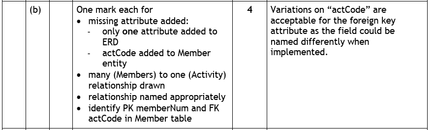
So the answer is:
Add an actCode* oval to the Member entity (1). Draw the relationship with the crow's foot on Member — many members to one activity (1). Name it, e.g. "registers for" (1). Underline memberNum in Member and actCode in Activity, and asterisk actCode in Member (1).
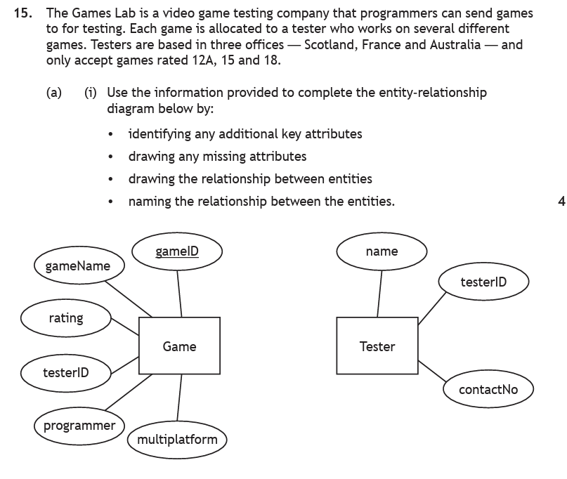
How to tackle it: same four bullets, same method — but this time the missing attribute is hidden in a sentence rather than on a form.
Cardinality first. "Each game is allocated to a tester who works on several different games." One tester, several games — so many Games to one Tester. Crow's foot on Game.
The missing attribute. Read the description again for a fact that has nowhere to live: "Testers are based in three offices — Scotland, France and Australia". Nothing in the Tester entity stores that, so we add a location oval to Tester. Note it goes on Tester, not Game — offices belong to testers.
Keys. testerID is already drawn on Tester: underline it as the primary key. It also already appears on Game — asterisk it as the foreign key. That is consistent with the crow's foot being on Game, so we know we are right. gameID is Game's primary key, underlined.
Name the relationship: "can test" — the tester tests the games.
Watch the trap: the rating "12A, 15 and 18" is not a missing attribute — Game already has a rating oval. That detail is there to describe validation (restricted choice), not to add a field. The marking instructions warn about this from the other direction too: add extra FK or PK attributes of your own and you lose the key mark.
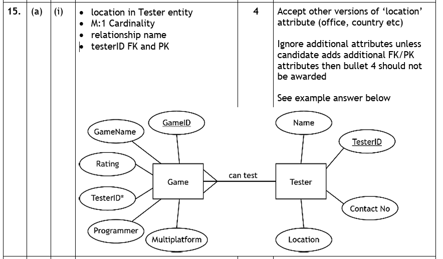
The example answer at the bottom of the marking instructions is worth studying — it is exactly the layout your own diagrams should follow.
So the answer is:
Add a location oval to Tester (1). Draw the relationship with the crow's foot on Game — many games to one tester (1). Name it, e.g. "can test" (1). Underline gameID and testerID as primary keys, and asterisk testerID in Game as the foreign key (1).
Practice Questions
These use a different scenario from the pupils and clubs database, so you are working the method rather than remembering the answers. A vet's surgery stores its records in two tables:
| Owner | |||
|---|---|---|---|
| ownerID | ownerName | phone | town |
| OW22 | D Sutherland | 07700 900412 | Troon |
| OW23 | P Ndiaye | 07700 900873 | Ayr |
| OW24 | L Moreau | 07700 900155 | Troon |
| Pet | ||||
|---|---|---|---|---|
| petID | petName | species | dateOfBirth | ownerID |
| 101 | Bramble | Dog | 02/05/2021 | OW22 |
| 102 | Nutmeg | Cat | 19/11/2019 | OW24 |
| 103 | Pepper | Dog | 07/03/2023 | OW22 |
Using the vet's surgery database above:
a) Identify the primary key of the Owner table.
b) Identify the primary key of the Pet table.
c) Identify the foreign key, stating which table it is in.
Marking Instructions
a) ownerID (1 mark). b) petID (1 mark). c) ownerID in the Pet table (1 mark).
Part c) needs the table named. "ownerID" on its own is not enough, because ownerID appears in both tables — the foreign key is specifically the copy sitting in Pet.
a) Describe the purpose of a primary key. (1 mark)
b) Describe the purpose of a foreign key. (1 mark)
c) The surgery tries to add a pet with an ownerID of OW99, which does not exist in the Owner table. Explain why the database rejects this. (1 mark)
Marking Instructions
a) It uniquely identifies each record in a table — the value is never repeated (1 mark).
b) It links two tables — it is the primary key of another table, creating the relationship between them (1 mark).
c) Referential integrity — every foreign key value must match an existing primary key in Owner, and there is no owner OW99, so the pet would be linked to an owner who does not exist (1 mark).
The surgery is adding an appointments feature. On the booking screen, the receptionist enters the appointment date, chooses a start time, ticks a box to say whether the pet has been seen before, and types in the fee to be charged.
State the most suitable attribute type for each of the four items, and state the type you would use for the existing phone attribute in the Owner table.
Marking Instructions
Appointment date — Date. Start time — Time. Seen before (a tick box) — Boolean. Fee — Number. (1 mark each, 4 marks; the phone answer is the check below.)
phone — Text, because "07700 900412" contains a space and a leading zero that would be lost if stored as a number, and you would never calculate with it.
A tick box on a screen almost always signals Boolean. And remember this is a database question: Text, not "String"; Number, not "Real".
The surgery gives the following requirements for the Pet table:
- Every pet must be given a name — it cannot be left blank.
speciesmust be one of Dog, Cat, Rabbit or Bird.petIDis always exactly 3 characters.- A pet's weight in kilograms must be between 0 and 90.
State the most suitable validation for each requirement.
Marking Instructions
petName — presence check. species — restricted choice. petID — length check. weight — range check. (1 mark each)
The wording gives each one away: "cannot be left blank" → presence; "one of…" (a fixed list) → restricted choice; "exactly 3 characters" → length; "between 0 and 90" → range.
Complete the six shaded cells in the data dictionary for the Pet table, using the sample data and the requirements from Question 4.
| Attribute name | Key | Type | Size | Required | Validation |
|---|---|---|---|---|---|
| petID | (a) | Text | 3 | Yes | Length check — 3 characters |
| petName | (b) | 20 | Yes | (c) | |
| species | Text | 10 | Yes | (d) | |
| dateOfBirth | (e) | Yes | Presence check | ||
| ownerID | (f) | Text | 4 | Yes | Presence check |
Marking Instructions
(a) PK — petID uniquely identifies each pet.
(b) Text.
(c) Presence check — every pet must be given a name.
(d) Restricted choice — Dog, Cat, Rabbit or Bird.
(e) Date.
(f) FK — ownerID is the primary key of the Owner table. (1 mark each)
Note what is not asked: the Size cell for dateOfBirth stays blank, because size is only ever filled in for Text.
One owner can register many pets at the surgery. Each pet belongs to only one owner.
Use the information provided to complete the entity-relationship diagram below by:
- drawing any missing attributes
- identifying any additional key attributes
- drawing the relationship between the entities
- naming the relationship between the entities.
Marking Instructions
One mark each for:
• Missing attribute added — ownerID* drawn as an oval on the Pet entity (and only that one attribute added).
• Relationship drawn with the crow's foot on Pet — many pets to one owner.
• Relationship named appropriately, e.g. "owns" or "registers".
• Keys identified — ownerID underlined in Owner and petID underlined in Pet, with ownerID asterisked in Pet.
Check yourself with the two-way reading test: "many pets are owned by one owner" ✅ and "one owner owns many pets" ✅. If you had put the fork on Owner, you would be claiming one pet has many owners — which the question rules out.
Next — Turning the Design into Questions
Designing a database is only half the job; the other half is getting answers out of it. Query design — deciding which fields, which tables, what to search for and how to sort — is covered alongside the language that carries it out, on the SQL — SELECT page, with the two-table version on SQL — Joins. The pupils and clubs database from this page is the one you will be querying.